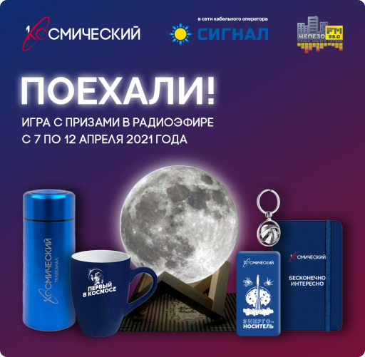
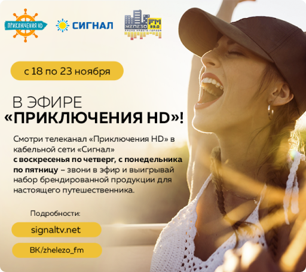

Stok

Tezliklə biz Kosmonavtika Gününü qeyd edəcəyik. Bu tədbir üçün biz SIGNAL kabel operatorunun şəbəkəsində First Space telekanalından hədiyyələr üçün viktorina keçirəcəyik. 7 apreldən başlayırıq!
Tezliklə biz Kosmonavtika Gününü qeyd edəcəyik. Bu tədbir üçün biz SIGNAL kabel operatorunun şəbəkəsində First Space telekanalından hədiyyələr üçün viktorina keçirəcəyik. 7 apreldən başlayırıq!
Biz oynayırıq: termoslar, kupalar, güc bankları. Hamısı First Space telekanalının loqosu ilə.
Aprelin 12-də biz əsas hədiyyələri - "First Space" loqosu olan "Ay" LED gecə işıqlarını oynayacağıq. Viktorina sualları, yəqin ki, artıq təxmin etdiyiniz kimi, kosmik mövzuya aid olacaq. Yaxşı, First Space telekanalına baxan bütün suallara rahatlıqla cavab verəcək.
Səhər saat 8-dən 10-a kimi “O ayaqdan” səhər şousunda, saat 12-dən 15-ə kimi “Sifariş üçün pleylist” proqramında oynayacağıq.
Yeni saat - yeni oyun!
Hər kəs üçün kifayət qədər hədiyyələr var!

ZHELEZO 99.0 FM radiosunda canlı oyunlar davam edir! Hədiyyələr partnyorumuz “Adventures HD” telekanalı tərəfindən təqdim edilmişdir: bazar günündən cümə axşamına kimi (18-23 noyabr) hər axşam - proqram paketində “Siqnal” provayderinin kabel şəbəkəsində “Adventures HD” telekanalına diqqətlə baxın. Əsas”. Noyabrın 19-dan 24-dək #StayLegs səhər şousuna 8 (47148) 777-17 nömrəsinə zəng edin, suallarımızı cavablandırın və HD Adventures kanalının simvolları olan səyahət dəstlərini qazanın.
Martın 31-də "Jelezo FM" radiosunun 5 yaşı tamam oldu. Radio komandası birinci ildönümünü ən sadiq radio dinləyiciləri və dostları ilə ingilis pubında qeyd etdi. Gecənin aparıcısı, dostumuz Dmitri Şvornev səhnədə bayram ab-havası yaratdı, burada ən yaxşı radio layihələrinin müəllifləri və sponsorlarımız layiqli mükafatlar aldılar. Radiostansiyanın menecerləri kollektivi ilk əlamətdar tarix münasibətilə təbrik edib, gələcək planlarından, yeni layihələrdən və yeni studiyaya köçməkdən danışıblar. Şənlikdə canlı musiqi səsləndi. Ən uğurlu layihələrimizdən biri olan “Live” gurultulu oldu. Uşaqların əsl pərəstişkarları var idi və hər mahnını xorda oxudular! Radio aparıcıları Olqa Yan və Natalya Ptitsyna oyunlar hazırlayıb, ən fəal olanlara hədiyyələr təqdim ediblər. Tətil ruhlu və parlaq oldu! Hər kəsə təşəkkürlər!